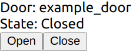
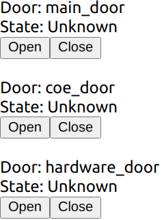
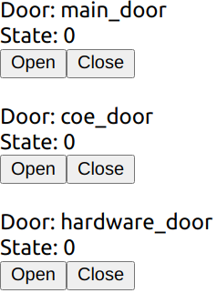
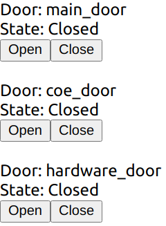

UI
Certain portion of this doc is deprecated, please refer to rmf-web for the latest development.
Introduction
This chapter describes how we can write end user applications which integrate into RMF. We will briefly go through the requirements of an RMF UI application and provide a tutorial to write a React Webapp that interfaces with RMF.
Overview
The most common way to write a UI application is to make use of a UI framework. There are many available UI frameworks, the following are some of the popular frameworks for reference:
- Multi-Paradigm
- Qt
- React native
- Xamarin
- Flutter
- Web
- React
- Angular
- Vue
- Desktop
- wxWidgets
- Gtk
- WPF (Windows only)
Each framework has pros and cons and we do not feel there is a "best" framework for all use cases. That being said, some frameworks are more suitable to integrate with RMF due to their specific underlying technologies. To understand why, let's take a brief overview at how an RMF UI application would work.
How Does an RMF UI Application Work?
Imagine a simple UI application with a label that shows the current status of a door and a button that opens/closes the door. Recall that in the door adapter, we publish door states and subscribe to door requests. Here we are doing the reverse; subscribing to door states and publishing door requests. We will be listening to door states coming in from RMF and updating our display to match, and we will also be sending door requests when the user clicks the open or close button.
We need to use a libray to help us do that. In the hardware adapter examples we are using the rclcpp library, but rclcpp isn't the only way to use ROS 2. Here are some libraries that also work well
- Direct
- rcl (C)
- rclcpp (C++)
- rclpy (python)
- rclnodejs (nodejs)
- Indirect
- SOSS (websocket)
- rosbridge (websocket)
A "direct" library is able to send and receive ROS 2 messages directly from the application, in contrast, an indirect library uses a middleman service to forward ROS 2 messages. In general, the "direct" approach is more preferable but sometimes it is not possible on the target platform. In these cases, the indirect approach can be used.
ros2-dotnet project for example, provides C# bindings for ROS 2. You can also write your own bindings and middlewares!
Writing an RMF UI application isn't much different from writing any other UI application, the only difference being that we will be sending/receiving ROS 2 data in response to user input and updating the UI's state.
Tutorial: React WebApp
In this section, we will go through an example of creating a React-based webapp to monitor door states and send door open/close requests. The tutorial will focus on the aspects of communicating with RMF; basic knowledge of React and TypeScript is needed.
Note that this isn't the only way to create a RMF UI application, as mentioned before, you can use any UI toolkit, the only requirement is to be able to send/receive ROS 2 messages.
The code for this tutorial is available here.
Requirements
- nodejs >= 10
- rmf_core
- soss
- rmf-soss-ros2
- rmf_demos
We will not go through the process of setting up the dependencies, instructions to set them up can be easily found on the web or from their project homepages.
Setting Up
We will be using an example from rmf_demo as the RMF deployment that we will be interacting with. This is a good time to test if your installation of rmf_demo is working properly, start the demo with the following command:
ros2 launch demos office.launch.xml
Next let's test if SOSS is working. In order to run SOSS, you need to provide it with a configuration file; you can use this template as a start. You would need a certificate for SOSS; refer to various tutorials online to generate one. If you are using a self-signed cert, also make sure your browser is set to accept it for websocket connections. Add the path of your cert and key to the SOSS config and try starting SOSS with:
soss <path_to_config>
Once the environment is set up, we can then proceed to set up our actual app. First, create a React workspace with:
npx create-react-app react-app-tutorial --template typescript
Go inside the newly created react-app-tutorial directory and run the following command to install all the JavaScript dependencies we will be using:
npm install @osrf/romi-js-core-interfaces @osrf/romi-js-soss-transport jsonwebtoken @types/jsonwebtoken
These libraries are not strictly required but they contain helpful functions to use soss and to communicate with RMF. If you are building a JavaScript-based RMF app, it is recommended to make use of them, we will see later how they simplify the communication to RMF.
@osrf/romi-js-soss-transport, there is also @osrf/romi-js-rclnodejs-transport which is able to send ROS 2 messages directly, however it does not work on the browser. It is preferred if you are writing a Node.js based desktop application using something like Electron, or you are writing a server based application like a REST API provider.
Door Component
First of all, let's start things simple by creating a component to show a door's state along with open and close buttons. Create a new file called Door.tsx in react-app-tutorial/src directory and copy the below snippet into it.
import React from 'react';
export interface DoorProps {
name: string;
state: string;
onOpenClick?(e: React.MouseEvent): void;
onCloseClick?(e: React.MouseEvent): void;
}
export const Door = (props: DoorProps) => {
const { name, state, onOpenClick, onCloseClick } = props;
return (
<div>
Door: {name}
<br />
State: {state}
<br />
<button onClick={(e) => onOpenClick && onOpenClick(e)}>Open</button>
<button onClick={(e) => onCloseClick && onCloseClick(e)}>Close</button>
<br />
<br />
</div>
);
};
export default Door;
Nothing much is happening here yet. We are simply rendering the door name, its state and open and a close button.
Let's test things out by running it. Replace App.tsx with this:
import React from 'react';
import Door from './Door';
function App() {
return <Door name="example_door" state="Closed" />;
}
export default App;
and start it with npm start. You should see something like this:

Great! We now have a base to start implementing the rest of the app.
Obtain List of Doors
Previously we made a simple door component and tested rendering it with hard-coded values. Obviously this won't work in a proper app, so here we will look at how we can obtain the list of actual doors from RMF.
Start of by adding a React state to track the list of doors:
const [doors, setDoors] = React.useState<RomiCore.Door[]>([]);
RMF has a get_building_map service that we can use to get the list of doors, lifts, levels among many other data, in order to make use of the service we need to do a ROS 2 service call, since there isn't ROS 2 support on the browser, we will be using an "indirect" approach with soss. A websocket connection is made to SOSS which will then act as a middleman and pass our messages to the ROS 2 network.
An easy way to use SOSS is with the @osrf/romi-js-soss-transport package, so let's do it now. Add a react effect hook to your App component
React.useEffect(() => {
(async () => {
const token = jwt.sign({ user: 'example-user' }, 'rmf', { algorithm: 'HS256' });
const transport = await SossTransport.connect('example', 'wss://localhost:50001', token);
})();
}, []);
We will need to import SossTransport, so add this to the top of the file:
import { SossTransport } from '@osrf/romi-js-soss-transport';
This performs a websocket connection to the SOSS server. example is the ROS 2 node name that we will be using, and we are connecting to a SOSS server at wss://localhost:50001. The server uses a JWT token signed with a secret specified in the SOSS config. The example config is using rmf. If you changed the secret, be sure to change it here as well.
Now that we have a connection to SOSS, we can call the get_building_map service. Add this to the React effect:
const buildingMap = (await transport.call(RomiCore.getBuildingMap, {})).building_map;
setDoors(buildingMap.levels.flatMap((level) => level.doors));
It uses RomiCore, so add this to your imports:
import * as RomiCore from '@osrf/romi-js-core-interfaces';
This downloads and parses the building map from RMF. romi-js simplifies a ROS 2 service call with the async call method. If you are familiar with rclnodejs, this is roughly equivalent to:
const client = node.createClient(
'building_map_msgs/srv/GetBuildingMap',
'get_building_map'
);
client.sendRequest({}, response => {
const buildingMap = response.building_map;
setDoors(buildingMap.levels.flatMap((level) => level.doors));
});
Notice that we need to provide it with type of the message (building_map_msgs/srv/GetBuildingMap) and the name of the service (get_building_map), but how do we find out what the service name and type are? We could read the RMF manual or query the ROS 2 system while RMF is running. Another way is with the help of RomiCore; it provides a list of known RMF services and messages so you don't have to go through the trouble of finding them yourself.
In the below statement, we are using RomiCore to call the get_building_map service without needing to know the service name and types:
transport.call(RomiCore.getBuildingMap, {})
Now that we have a list of RomiCore.Door, let's make things simpler by updating Door.tsx to take that in as a prop. While we're at it, let's also have it take in a RomiCore.DoorState as a prop since we will be using it later.
Door.tsx:
import * as RomiCore from '@osrf/romi-js-core-interfaces';
import React from 'react';
export interface DoorProps {
door: RomiCore.Door;
doorState?: RomiCore.DoorState;
onOpenClick?(e: React.MouseEvent): void;
onCloseClick?(e: React.MouseEvent): void;
}
export const Door = (props: DoorProps) => {
const { door, doorState, onOpenClick, onCloseClick } = props;
return (
<div>
Door: {door.name}
<br />
State: {doorState ? doorState.current_mode.value : 'Unknown'}
<br />
<button onClick={(e) => onOpenClick && onOpenClick(e)}>Open</button>
<button onClick={(e) => onCloseClick && onCloseClick(e)}>Close</button>
<br />
<br />
</div>
);
};
export default Door;
Now we can test it by passing the doors as props. Your App.tsx component should now look like this:
import * as RomiCore from '@osrf/romi-js-core-interfaces';
import { SossTransport } from '@osrf/romi-js-soss-transport';
import * as jwt from 'jsonwebtoken';
import React from 'react';
import Door from './Door';
function App() {
const [doors, setDoors] = React.useState<RomiCore.Door[]>([]);
React.useEffect(() => {
(async () => {
const token = jwt.sign({ user: 'example-user' }, 'rmf', { algorithm: 'HS256' });
const transport = await SossTransport.connect('example', 'wss://localhost:50001', token);
const buildingMap = (await transport.call(RomiCore.getBuildingMap, {})).building_map;
setDoors(buildingMap.levels.flatMap((level) => level.doors));
})();
}, []);
return (
<React.Fragment>
{doors.map((door) => (
<Door door={door} />
))}
</React.Fragment>
);
}
export default App;
Don't worry about the door state for now. If everything goes well, you should see 3 doors that are in the building listed:

Listening for Door States
Previously we managed to render the list of doors in the RMF system, but the building map doesn't tell us the doors' states, so let's fix that. First, let's add a React state to track the door states:
const [doorStates, setDoorStates] = React.useState<Record<string, RomiCore.DoorState>>({});
The door states can be obtained by subscribing to the door_states topic. Add the following to your effect:
transport.subscribe(RomiCore.doorStates, (doorState) =>
setDoorStates((prev) => ({ ...prev, [doorState.door_name]: doorState })),
);
This performs a ROS 2 subscription to the RomiCore.doorStates topic. Similar to the service call we did earlier, romi-js abstracts away the ROS 2 topic name and provides type information. The callback will be fired each time a new door state message comes in. In the callback, we simply update the doorStates state.
Now just pass the door state to the door component:
<Door door={door} doorState={doorStates[door.name]} />
The end result of your App.tsx should look like this:
import * as RomiCore from '@osrf/romi-js-core-interfaces';
import { SossTransport } from '@osrf/romi-js-soss-transport';
import * as jwt from 'jsonwebtoken';
import React from 'react';
import Door from './Door';
function App() {
const [doors, setDoors] = React.useState<RomiCore.Door[]>([]);
const [doorStates, setDoorStates] = React.useState<Record<string, RomiCore.DoorState>>({});
React.useEffect(() => {
(async () => {
const token = jwt.sign({ user: 'example-user' }, 'rmf', { algorithm: 'HS256' });
const transport = await SossTransport.connect('example', 'wss://localhost:50001', token);
const buildingMap = (await transport.call(RomiCore.getBuildingMap, {})).building_map;
setDoors(buildingMap.levels.flatMap((level) => level.doors));
transport.subscribe(RomiCore.doorStates, (doorState) =>
setDoorStates((prev) => ({ ...prev, [doorState.door_name]: doorState })),
);
})();
}, []);
return (
<React.Fragment>
{doors.map((door) => (
<Door door={door} doorState={doorStates[door.name]} />
))}
</React.Fragment>
);
}
export default App;
And just like that we now have the door states!

The door states are numbers like 0, 1 and 2. This is because RMF uses a constant to represent door states. We could run a simple function to convert these constants into strings:
function doorModeString(doorMode: RomiCore.DoorMode): string {
switch (doorMode.value) {
case 2:
return 'Open';
case 0:
return 'Closed';
case 1:
return 'Moving';
default:
return 'Unknown';
}
}
But how do we know 2 means "Open" etc? We can find out by reading the RMF manual or inspecting the ROS 2 message definitions, but we can do better with RomiCore. It provides the list of constants in a more readable form:
function doorModeString(doorMode: RomiCore.DoorMode): string {
switch (doorMode.value) {
case RomiCore.DoorMode.MODE_OPEN:
return 'Open';
case RomiCore.DoorMode.MODE_CLOSED:
return 'Closed';
case RomiCore.DoorMode.MODE_MOVING:
return 'Moving';
default:
return 'Unknown';
}
}
With this it's obvious what each constant represents so we don't have to refer to anything else to find its meaning.
Go ahead and add this to your Door.tsx. It should look like this now:
import * as RomiCore from '@osrf/romi-js-core-interfaces';
import React from 'react';
export interface DoorProps {
door: RomiCore.Door;
doorState?: RomiCore.DoorState;
onOpenClick?(e: React.MouseEvent): void;
onCloseClick?(e: React.MouseEvent): void;
}
export const Door = (props: DoorProps) => {
const { door, doorState, onOpenClick, onCloseClick } = props;
const modeString = doorState ? doorModeString(doorState.current_mode) : 'Unknown';
return (
<div>
Door: {door.name}
<br />
State: {modeString}
<br />
<button onClick={(e) => onOpenClick && onOpenClick(e)}>Open</button>
<button onClick={(e) => onCloseClick && onCloseClick(e)}>Close</button>
<br />
<br />
</div>
);
};
function doorModeString(doorMode: RomiCore.DoorMode): string {
switch (doorMode.value) {
case RomiCore.DoorMode.MODE_OPEN:
return 'Open';
case RomiCore.DoorMode.MODE_CLOSED:
return 'Closed';
case RomiCore.DoorMode.MODE_MOVING:
return 'Moving';
default:
return 'Unknown';
}
}
export default Door;
Great! Now we have readable door states instead of cryptic numbers.

Sending Door Requests
As you may have expected by now, all we have to do here is to send door requests to RMF.
First, create a publisher. Add this to the start of the render function:
const doorRequestPub = React.useRef<RomiCore.Publisher<RomiCore.DoorRequest> | null>(null);
Then add this helper function:
const requestDoor = (door: RomiCore.Door, mode: number) => {
if (doorRequestPub.current) {
const request: RomiCore.DoorRequest = {
door_name: door.name,
request_time: RomiCore.toRosTime(new Date()),
requested_mode: { value: mode },
requester_id: 'example-request',
};
doorRequestPub.current.publish(request);
}
};
It takes in a RomiCore.Door and a number representing the desired mode, and crafts a RomiCore.DoorRequest message and sends it using the publisher. Normally you would have to consult the RMF manual or the ROS 2 definitions to know exactly what you need to send. Again, RomiCore provides the typing information to make it easier to fill in the required fields.
Finally, add this to the props passed to the door component:
onOpenClick={() => requestDoor(door, RomiCore.DoorMode.MODE_OPEN)}
onCloseClick={() => requestDoor(door, RomiCore.DoorMode.MODE_CLOSED)}
Your final App.tsx should look like this:
import * as RomiCore from '@osrf/romi-js-core-interfaces';
import { SossTransport } from '@osrf/romi-js-soss-transport';
import * as jwt from 'jsonwebtoken';
import React from 'react';
import Door from './Door';
function App() {
const [doors, setDoors] = React.useState<RomiCore.Door[]>([]);
const [doorStates, setDoorStates] = React.useState<Record<string, RomiCore.DoorState>>({});
const doorRequestPub = React.useRef<RomiCore.Publisher<RomiCore.DoorRequest> | null>(null);
React.useEffect(() => {
(async () => {
const token = jwt.sign({ user: 'example-user' }, 'rmf', { algorithm: 'HS256' });
const transport = await SossTransport.connect('example', 'wss://localhost:50001', token);
const buildingMap = (await transport.call(RomiCore.getBuildingMap, {})).building_map;
setDoors(buildingMap.levels.flatMap((level) => level.doors));
transport.subscribe(RomiCore.doorStates, (doorState) =>
setDoorStates((prev) => ({ ...prev, [doorState.door_name]: doorState })),
);
doorRequestPub.current = transport.createPublisher(RomiCore.adapterDoorRequests);
})();
}, []);
const requestDoor = (door: RomiCore.Door, mode: number) => {
if (doorRequestPub.current) {
const request: RomiCore.DoorRequest = {
door_name: door.name,
request_time: RomiCore.toRosTime(new Date()),
requested_mode: { value: mode },
requester_id: 'example-request',
};
doorRequestPub.current.publish(request);
}
};
return (
<React.Fragment>
{doors.map((door) => (
<Door
door={door}
doorState={doorStates[door.name]}
onOpenClick={() => requestDoor(door, RomiCore.DoorMode.MODE_OPEN)}
onCloseClick={() => requestDoor(door, RomiCore.DoorMode.MODE_CLOSED)}
/>
))}
</React.Fragment>
);
}
export default App;
Try clicking on the open and close buttons now. You should see the door state being updated. You can also see the door opening/closing in Gazebo. Congratulations, you have just written a simple RMF UI application! Obviously the design leaves much to be desired as we didn't do any CSS styling but that is outside the scope of this tutorial.
Extending this to provide more features like lift control, fleet states, etc. follows the same principle. All the available topics and services exposed by RMF are available in RomiCore and you can find more detailed information by reading the rest of the manual. This also extends to writing UI applications for other platforms and frameworks; at the core you are really just publishing and subscribing to ROS 2 messages so you can apply the same principles to other languages and frameworks.
Conclusion
We have just created a minimal RMF UI application that reports the door state and allows a user to control the door. For simplicity, there aren't many features included but this tutorial should provide the basic knowledge of how to create an RMF UI application not only in React but also in any framework that you like.
If you would like more examples of a React RMF application, you can take a look at the official RoMi dashboard.
Extra: Extending romi-js
Throughout the tutorial, we used romi-js to simplify the communication to RMF. As you might have noticed romi-js is actually a collection of packages. This design makes it possible to easily extend it with new topics, services and even transports.
Adding Topics and Services
Topics and services are defined by the interfaces:
export interface RomiTopic<Message> {
readonly validate: (msg: any) => Message;
readonly type: string;
readonly topic: string;
readonly options?: Options;
}
export interface RomiService<Request, Response> {
readonly validateRequest: (msg: any) => Request;
readonly validateResponse: (msg: any) => Response;
readonly type: string;
readonly service: string;
readonly options?: Options;
}
If you are familiar with ROS 2, the type field specifies the message type that the topic or service expects while topic/service are the topic and service names, respectively. Sometimes a topic or service is expected to use a different QoS option; for example a topic that does not publish when the state changes and expects late subscriptions to make use of transient local QoS to receive the latest state. The options specify the "default" QoS options that should be used. In this way, users do not have to refer to the usage instructions to correctly publish and subscribe to the topic.
The validate* methods are used by the transport to convert an arbitrary object to the expected type of the topic or service. It should check if the object has the correct fields and that the fields are of the correct types. To ensure compatibility with different transports, these methods should be able to convert number arrays to typed arrays and vice versa.
We can create custom topics or services by implementing these interfaces. They can then be passed to the transport's various methods.
export const myTopic: RomiTopic<MyMessage> = {
validate: validateMyMessage(msg), // some function that valides MyMessage
type: 'my_messages/msg/MyMessage',
topic: 'my_topic',
};
Adding Transport
A Transport in romi-js is a class with the interface:
export interface Subscription {
unsubscribe(): void;
}
export interface Publisher<Message> {
publish(msg: Message): void;
}
export interface Service<Request, Response> {
start(handler: (req: Request) => Promise<Response> | Response): void;
stop(): void;
}
export interface Transport extends TransportEvents {
readonly name: string;
createPublisher<Message extends unknown>(
topic: RomiTopic<Message>,
options?: Options,
): Publisher<Message>;
subscribe<Message extends unknown>(
topic: RomiTopic<Message>,
cb: SubscriptionCb<Message>,
options?: Options,
): Subscription;
call<Request extends unknown, Response extends unknown>(
service: RomiService<Request, Response>,
req: Request,
): Promise<Response>;
createService<Request extends unknown, Response extends unknown>(
service: RomiService<Request, Response>,
): Service<Request, Response>;
destroy(): void;
}
There isn't a general guide on how the interface should be implemented since the details would be different for each transport. One thing to note is that it might be tempting to return a type derived from any (e.g. Publisher<any>) to pass the typescript checks but doing so is not recommended. You should call the validate* methods in the topic or service to convert something into a type of Message.
To ensure compatibility with different topics and services, transports must de-serialize the data to a plain old data object. It can use either number arrays or typed arrays. The validate* methods should support converting them to the expected types.